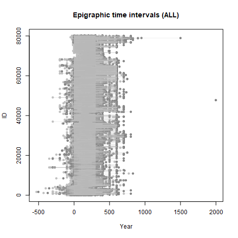
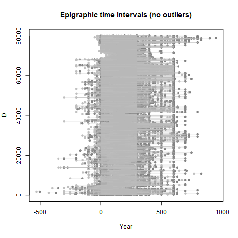
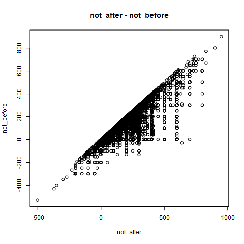

Epigraphic Database Heidelberg¶
This post is about accessing the “Epigraphic Database Heidelberg” (EDH), which is one of the longest running database projects in digital Latin epigraphy. The [EDH] database started as early as year 1986, and in 1997 the Epigraphic Database Heidelberg website was launched at <https:/edh-www.adw.uni-heidelberg.de> where inscriptions, images, bibliographic and geographic records can be searched and browsed online.
Open Data Repository¶
Despite the possibility of accessing the [EDH] database through a Web browser, it is many times convenient to get the Open Data Repository by the [EDH] through its public Application Programming Interface (API).
For inscriptions, the generic search pattern Uniform Resource Identifier (URI) is:
https://edh-www.adw.uni-heidelberg.de/data/api/inscriptions/search?par_1=value&par_2=value&par_n=value
with parameters par \(1,2,...n\).
Response¶
The response from a query is in a Java Script Object Notation or JSON format such as:
{
"total" : 61,
"limit" : "20",
"items" : [ ... ]
}
In this case, "items" has an array as a value where the returned records are located. The "total"
and "limit" values correspond to the total number of records of the query, and the limit number is
the amount of records to appear in the browser after the query.
Accessing the EDH database using R¶
Accessing the [EDH] database [API] using R is possible with a convenient function that produces
the generic search pattern [URI]. Hence, the function get.edh() from the sdam package allows
having access to the data with the available parameters that are recorded as arguments. Then the
returned [JSON] file is converted into a list data object with function fromJSON() from the
rjson package.
Currently, function get.edh() allows getting data with the search parameter
either from "inscriptions" (the default option) or else from "geography".
The other two search options from the [EDH] database [API], which are "photos"
and "bibliography", may be implemented in the future in this function.
(see R package “sdam”)
Functions Usage¶
-
get.edh()¶
# arguments supported (currently)
R> get.edh(search = c("inscriptions", "geography")
, url = "https://edh-www.adw.uni-heidelberg.de/data/api"
, hd_nr, province, country, findspot_modern
, findspot_ancient, year_not_before, year_not_after
, tm_nr, transcription, type, bbox, findspot, pleiades_id
, geonames_id, offset, limit, addID, printQ)
-
get.edhw()¶
# a wrapper function to perform several queries
R> get.edhw(hd_nr, ...)
Currently, function get.edhw() works only for inscriptions.
Note
“
R>” at the beginning of the line means that the following code is written inR. Comments are preceded by “#”.
Search parameters¶
The following parameter description is from the [EDH] database [API] <https://edh-www.adw.uni-heidelberg.de/data/api>:
Inscriptions and Geography¶
province:
get list of valid values at province terms, in the [EDH] database [API], case insensitive
country:
get list of valid values at country terms in the [EDH] database [API], case insensitive
findspot_modern:
add leading and/or trailing truncation by asterisk *, e.g.
findspot\_modern=köln\*, case insensitivefindspot_ancient:
add leading and/or trailing truncation by asterisk *, e.g.
findspot\_ancient=aquae\*, case insensitiveoffset:
clause to specify which row to start from retrieving data, integer
limit:
clause to limit the number of results, integer (by default includes all records)
bbox:
bounding box with the format
bbox=minLong, minLat, maxLong, maxLat.The query example:
https://edh-www.adw.uni-heidelberg.de/data/api/inscriptions/search?bbox=11,47,12,48
that in [R] is a vector character.
Hint
Just make sure to quote the arguments in
get.edh()for the different parameters that are not integers. This means for example that the query for the last parameter with the two search options is written asR> get.edh(search="inscriptions", bbox="11,47,12,48") R> get.edh(search="geography", bbox="11,47,12,48")
Inscriptions only¶
hd_nr:
HD-No of inscription
year_not_before:
integer, BC years are negative integers
year_not_after:
integer, BC years are negative integers
tm_nr:
Trismegistos database number (?)
transcription:
automatic leading and trailing truncation, brackets are ignored
type:
of inscription, get list of values at terms type in the [EDH] database [API], case insensitive
Geography only¶
findspot:
- level of village, street etc.; add leading and/or trailing
truncation by asterisk
\*, e.g.findspot\_modern=köln\*, case insensitive
pleiades_id:
Pleiades identifier of a place; integer value
geonames_id:
Geonames identifier of a place; integer value
Extra parameters¶
addID:
Add identification to the output?
printQ:
Print also the query?
The two functions we have seen so far, get.edh() and get.edhw(),
are available in the sdam package.
See also
Examples¶
The examples are made with the sdam R package.
Since the get.edh() function needs to transform JSON output using rjson::fromJSON(),
you need to have this package installed as well.
Then, to run the examples you need to load the required libraries.
R> library("sdam")
R> require("rjson") # https://cran.r-project.org/package=rjson
The query
R> get.edh(findspot_modern="madrid")
returns this truncated output:
#$ID
#[1] "041220"
#
#$commentary
#[1] " Verschollen. Mögliche Datierung: 99-100."
#
#$country
#[1] "Spain"
#
#$diplomatic_text
#[1] "[ ] / [ ] / [ ] / GER PO[ ]TIF / [ ] / [ ] / [ ] / ["
#
#...
#
#$findspot_modern
#[1] "Madrid"
#
#$id
#[1] "HD041220"
#
#$language
#[1] "Latin"
#
#...
#
With "inscriptions", which is the default option of get.edh() and of the wrapper
function get.edhw(), the id “component” of the output list has not a numeric
format. However, many times is convenient to have a numerical identifier in each record,
and function get.edh() adds an ID with a numerical format at the beginning of the list.
Having a numerical identifier is useful for plotting the results, and an ID is added
to the output by default. You can prevent such addition by disabling
argument addID with FALSE.
R> get.edh(findspot_modern="madrid", addID=FALSE)
Further extensions to the [EDH] database [API] may be added in the future, and this will be
handled with similar arguments in the get.edh() function …
Accessing epigraphic database Heidelberg: Inscriptions¶
To study temporary uncertainty, for example, we need to access to an epigraphic database like the Heidelberg.
The wrapper function get.edhw() allows multiple queries by using the Heidelberg number hd_nr.
# get data API from EDH with a wrapper function
R> EDH <- get.edhw(hd_nr=1:82464) # (20-11-2019)
which will produce a list object with the existing entries for each inscription, and where entries have different length.
Beware that retrieving such a large number of records will take a very long time. Hence, you can do it by parts and then collate the lists into another object.
Output¶
The output depends on each particular case.
R> is(EDH)
#[1] "list" "vector"
The first record has 28 attribute names
# check variable names of first entry
R> attr(EDH[[1]], "names")
# [1] "ID" "commentary" "country"
# [4] "depth" "diplomatic_text" "edh_geography_uri"
# [7] "findspot_ancient" "findspot_modern" "height"
#[10] "id" "language" "last_update"
#[13] "letter_size" "literature" "material"
#[16] "modern_region" "not_after" "not_before"
#[19] "people" "province_label" "responsible_individual"
#[22] "transcription" "trismegistos_uri" "type_of_inscription"
#[25] "type_of_monument" "uri" "width"
#[28] "work_status"
While record 21 has 34 items.
R> attr(EDH[[21]], "names")
# [1] "ID" "commentary"
# [3] "country" "depth"
# [5] "diplomatic_text" "edh_geography_uri"
# [7] "findspot" "findspot_ancient"
# [9] "findspot_modern" "geography"
#[11] "height" "id"
#[13] "language" "last_update"
#[15] "letter_size" "literature"
#[17] "material" "military"
#[19] "modern_region" "not_after"
#[21] "not_before" "people"
#[23] "present_location" "province_label"
#[25] "responsible_individual" "social_economic_legal_history"
#[27] "transcription" "trismegistos_uri"
#[29] "type_of_inscription" "type_of_monument"
#[31] "uri" "width"
#[33] "work_status" "year_of_find"
people¶
Attribute people is another list with other attribute names
R> length(EDH[[1]]$people)
#[1] 3
R> attr(EDH[[1]]$people[[1]], "names")
#[1] "name" "gender" "nomen" "person_id" "cognomen"
...
R> attr(EDH[[1]]$people[[3]], "names")
[1] "cognomen" "praenomen" "person_id" "gender" "name" "nomen"
You can find a complete list of attribute names in the EDH dataset in
the sdam manual.
-
edhw()¶
Function edhw()¶
A wrapper function for EDH manipulation is found in routine edhw().
Function usage¶
# list of accepted parameter arguments
R> edhw(vars, x=NULL, as=c("list", "df"), limit, id, na.rm, ...)
Parameters¶
Formal arguments of edhw() are:
vars:
Chosen variables from the
EDHdata set (vector)x:
An optional list object name with fragments of the
EDHdatasetas:
Format to return the output. Currently either as a
listor a data framedfobject.limit:
Limit the returned output. Ignored if
idis specified (optional, integer or vector)id:
Select only the
hd_nrid(s) (optional, integer or character)na.rm:
Remove entries with
NAinformation? (logical and optional)…
Optional arguments if needed.
Relative dating¶
We are going to apply the edhw() function to check the relative dating of the inscriptions in the EDH
dataset. For this, we choose variables from the EDH list that are "not_after" and
"not_before" with an identification number in "ID".
For a simple relative dating analysis of EDH inscriptions, it is enough to choose three variables:
# make a list for three variables in 'EDH' (default)
R> EDHdates <- edhw(vars=c("ID", "not_after", "not_before") )
Hint
The above use of function
edhw()is wrapping thebaselapplyfunction as# recursively apply a function over the list for three variables R> EDHdates <- lapply(EDH, `[`, c("ID", "not_after", "not_before") )where a pair of backquotes (aka “backticks”) is a way to refer in
Rto names or combinations of symbols that are otherwise reserved or illegal, called non-syntactic names. Hence, e.g.apply(foo, `[`, c(...) )is the same asapply(foo, function (x) x[c(...)]).
As a result, EDHdates is a new list object with the three items and all entries in EDH.
R> length(EDHdates) #[1] 82465
where the first entry is
# look at the new object 'EDHdates' R> head(EDHdates, 1) #[[1]] #[[1]]$ID #[1] "000001" # #[[1]]$not_after #[1] "0130" # #[[1]]$not_before #[1] "0071"
Missing data¶
It is also possible to remove missing data from EDH by activating the na.rm argument in function
edhw().
# remove missing data
R> EDHdt <- edhw(vars=c("ID", "not_after", "not_before"), na.rm=TRUE)
and now the object has a shorter length
R> length(EDHdt) #[1] 55207
Data frames¶
To produce data frames, we need to make it explicit in the function.
# produce a data frame with three variables and remove missing data
R> EDHdtdf <- edhw(vars=c("ID", "not_after", "not_before"), as="df", na.rm=TRUE )
The first entries are
# look at the first ones R> head(EDHdtdf) # ID not_after not_before #1 000001 0130 0071 #2 000002 0200 0051 #3 000003 0170 0131 #4 000004 0200 0151 #5 000005 0200 0001 #6 000006 0150 0071
and the last entries
# look at the last ones R> tail(EDHdtdf) # ID not_after not_before #55202 080147 0400 0201 #55203 080148 0400 0201 #55204 080149 0400 0201 #55205 080150 0200 0001 #55206 080151 0100 0001 #55207 080152 0100 0001
To compute the years, which are in the second and third column of EDHdtdf we need to unlist
the data frame first and treat the data as numeric format.
# years: oldest and latest
R> years <- c(min(as.numeric(unlist(EDHdtdf[,2:3]))), max(as.numeric(unlist(EDHdtdf[,2:3]))))
#[1] -530 1998
Years are between 530 BC and 1998 AC.
Plotting relative dating¶
The plot is made with the [R] graphics core package (and the base package if you are using R version 4.0.0).
# plot with graphics
R> plot(EDHdtdf$not_before, EDHdtdf$ID, pch=20, col="#C0C0C0", xlab="Year", ylab="ID", xlim=years,
+ main="Epigraphic time intervals (ALL)")
R> points(EDHdtdf$not_after, EDHdtdf$ID, pch=20, col="#808080")
R> segments(as.numeric(EDHdtdf$not_before), as.numeric(EDHdtdf$ID), as.numeric(EDHdtdf$not_after),
+ as.numeric(EDHdtdf$ID), col=grDevices::adjustcolor(8, alpha=.25))
That produces:
{kind=link}
Treating Outliers¶
By looking at the above plot, we can clearly see a couple of outliers.
# first outlier is the maximum value of the dates
R> max(as.numeric(unlist(EDHdtdf[,2:3])))
#[1] 1998
We would like now to remove the two most extreme outliers.
# remove last date
R> EDHdtdfx <- EDHdtdf[-which(EDHdtdf[,2]==1998), ]
# second outlier is now the maximum value
R> max(as.numeric(unlist(EDHdtdfx[,2:3])))
#[1] 1500
# remove the (second) last date
R> EDHdtdfx <- EDHdtdfx[-which(EDHdtdfx[,2]==1500), ]
Now we need to update the years.
# update years
R> years <- c(min(as.numeric(unlist(EDHdtdfx[,2:3]))),max(as.numeric(unlist(EDHdtdfx[,2:3]))))
#[1] -530 95
Years are now between 530 BC and 95 AC.
Plotting without outliers¶
The plot is now constructed without the two outliers and with updated years.
# plot with graphics
R> plot(EDHdtdfx$not_before, EDHdtdfx$ID, pch=20, col="#C0C0C0", xlab="Year", ylab="ID", xlim=years,
+ main="Epigraphic time intervals (no outliers)")
R> points(EDHdtdfx$not_after, EDHdtdfx$ID, pch=20, col="#808080")
R> segments(as.numeric(EDHdtdfx$not_before), as.numeric(EDHdtdfx$ID), as.numeric(EDHdtdfx$not_after),
+ as.numeric(EDHdtdfx$ID), col=grDevices::adjustcolor(8, alpha=.25))
That produces a plot with no outliers:
{kind=link}
Other plots¶
Visualization helps to perform different kinds of analyses.
# plot not_after against not_before
R> plot(EDHdtdfx$not_after, EDHdtdfx$not_before, xlab="not_after", ylab="not_before",
+ xlim=c(min(as.numeric(unlist(EDHdtdfx$not_after))),max(as.numeric(unlist(EDHdtdfx$not_after)))),
+ ylim=c(min(as.numeric(unlist(EDHdtdfx$not_before))),max(as.numeric(unlist(EDHdtdfx$not_before)))))
That produces:
{kind=link}
Then we need to calculate the residuals to start a statistic analysis of dates.